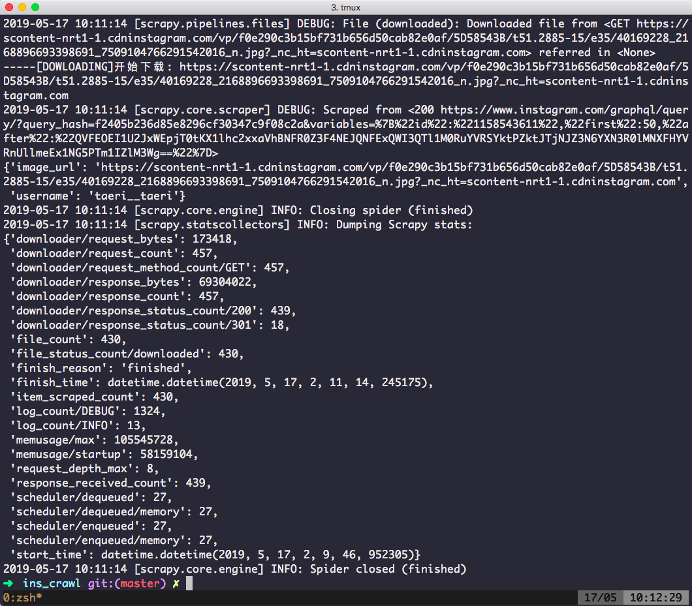
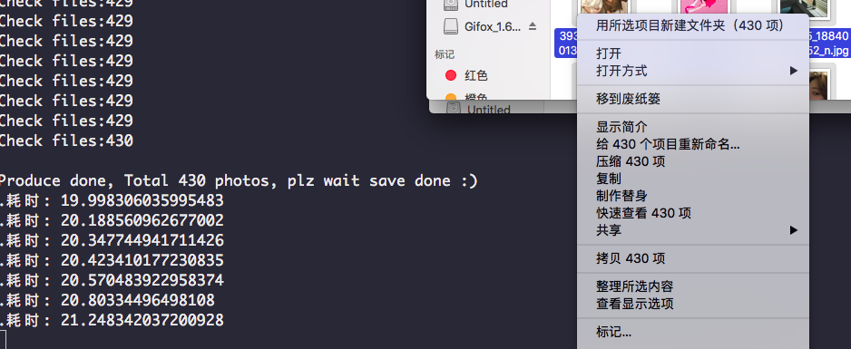
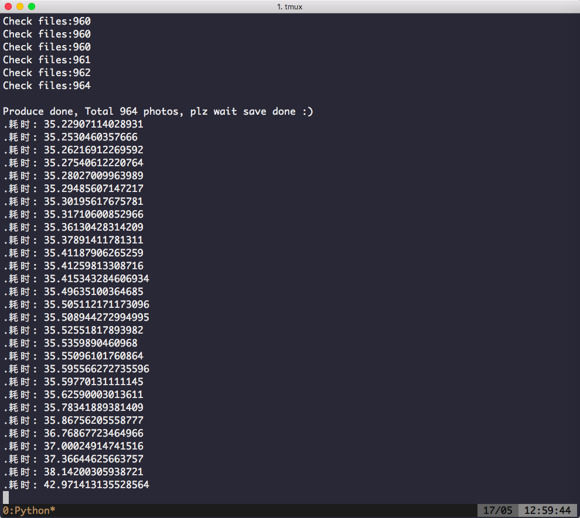
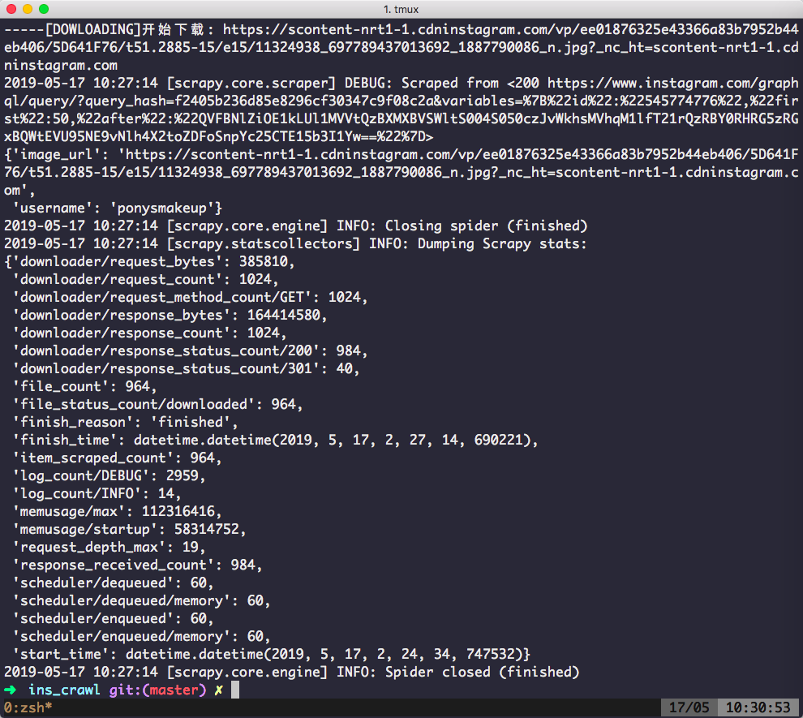

前言
上午写完那篇文章后，下午在睡觉，晚上就想试试scrapy比较一下速度，那个更快，我是第一次用scrapy下载图片，第一次我使用requests下载的。。。贼鸡儿慢，就是单线程；后来翻了翻文档按照官方的例子改了改算是成功了，这篇文章就说一下我遇到的坑吧，文末对比两者速度
正文
站点分析就免去了，看上一片文章
首先新建一个项目
1 | ➜ scrapy git:(master) ✗ scrapy startproject ins_crawl |
接着生成spider：
1 | ➜ scrapy git:(master) ✗ cd ins_crawl |
为了方便观看，我先tree一下我项目：
.
├── ins_crawl
│ ├── init.py
│ ├── pycache
│ │ ├── init.cpython-37.pyc
│ │ ├── items.cpython-37.pyc
│ │ ├── middlewares.cpython-37.pyc
│ │ ├── pipelines.cpython-37.pyc
│ │ └── settings.cpython-37.pyc
│ ├── images
│ │ ├── InsImagesPipeline.py
│ │ ├── init.py
│ │ └── pycache
│ │ ├── InsImagesPipeline.cpython-37.pyc
│ │ └── init.cpython-37.pyc
│ ├── items.py
│ ├── middlewares.py
│ ├── pipelines.py
│ ├── settings.py
│ └── spiders
│ ├── init.py
│ ├── pycache
│ │ ├── init.cpython-37.pyc
│ │ ├── config.cpython-37.pyc
│ │ └── ins.cpython-37.pyc
│ ├── config.py
│ └── ins.py
└── scrapy.cfg6 directories, 21 files
打开 ins_crawl/spider/ins.py 文件，代码如下，注意看注释：
1 | # -*- coding: utf-8 -*- |
config.py
1 | PROXY = '127.0.0.1:8001' # 代理 |
items.py
1 | # -*- coding: utf-8 -*- |
Pipelines 里没动，就不贴了
InsImagesPipeline.py，有官方提供的例子改的，media-pipeline
1 | import logging |
InsProxyMiddlewares.py
1 | from ins_crawl.spiders.config import * |
settings.py
1 | BOT_NAME = 'scrapy' |
运行
taeri__taeri 该用户目前有 430张照片
抓取430张照片
Scrapy 耗时87秒， 0.20232558139534884 / 张。

asyncio+aiohttp 耗时21秒， 0.04883720930232558 / 张

之后我换了个用户：ponysmakeup，照片数量是964
asyncio+aiohttp 耗时42.9秒，0.04450207468879668 / 张

而scrapy 耗时159.9秒， 0.1658713692946058 / 张

总结
我一开始以为scrapy会很快，没想到比不过asyncio+aiohttp这阵容，我打算用 aiohttp+asyncio+aioredis 写一个代理池，预算用一个礼拜吧，不知道要多久 (:
项目：ins_crawl